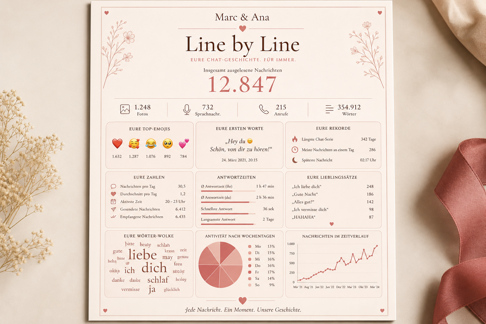

Eure Zahlen
Nachrichten, Fotos, Sprachnachrichten, Anrufe und Wörter – übersichtlich auf einen Blick, inklusive Lieblings-Uhrzeit und Antwortzeiten.
Line by Line verwandelt euren gemeinsamen WhatsApp-Chat in ein elegantes A4-Poster: mit Lieblings-Emojis, ersten Worten, Rekorden, Wortwolke, Wochentags- und Monats-Charts – alles in eurem persönlichen Stil.

Ob Paar, beste Freundinnen oder Familie – Line by Line macht aus tausenden Nachrichten ein hochwertiges Erinnerungsstück zum Verschenken, Aufhängen oder Einrahmen.
Nachrichten, Fotos, Sprachnachrichten, Anrufe und Wörter – übersichtlich auf einen Blick, inklusive Lieblings-Uhrzeit und Antwortzeiten.
Die ersten Worte, die meistgesagten Sätze und eure Top-Emojis erzählen die Geschichte hinter den Statistiken.
Wortwolke, Wochentags-Pie-Chart und Nachrichten pro Monat zeigen Muster eurer Unterhaltung – schön designt im Corporate Look.
Ihr exportiert euren Chat, wir gestalten daraus euer individuelles Line-by-Line-Poster – druckfertig als PDF oder HTML.
In WhatsApp den Chat als ZIP exportieren (mit oder ohne Medien, je nach Wunsch).
Über unser Bestellformular ladet ihr die ZIP-Datei hoch und gebt Namen sowie Wünsche an.
Ihr bekommt euer fertiges A4-Poster – zum Selbstausdrucken oder als Datei für den Druckservice eurer Wahl.
Eure Chat-Inhalte sind persönlich. Deshalb behandeln wir sie mit größter Sorgfalt – und erklären transparent, was passiert.
Wählt euer Poster über unser sicheres Bestellformular. Bezahlung und Upload erfolgen bequem über Tally.
Zum Bestellformular